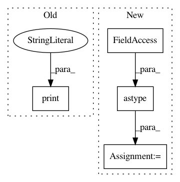

c8b28432a637a780eed96547260722ff3dede57e,niftynet/engine/sampler_selective.py,,rand_choice_coordinates,#Any#Any#Any#Any#Any#Any#,350
Before Change
spatial_coords = np.append(
subject_id[:, None], spatial_coords, axis=1)
all_coordinates[mod] = spatial_coords
print("Finished sampling")
return all_coordinates
class Constraint():
After Change
list_indices_fin = list_indices_fin[:n_samples]
max_coords = np.zeros((n_samples, N_SPATIAL), dtype=np.int32)
half_win = np.floor(np.asarray(win_sizes["image"]) / 2).astype(np.int)
for (i_sample, ind) in enumerate(list_indices_fin):
indices_to_add = candidates_indices[ind]
max_coords[i_sample, :N_SPATIAL] = \
indices_to_add[:N_SPATIAL] - half_win[:N_SPATIAL]
// adjust max spatial coordinates based on each spatial window size
all_coordinates = {}
for mod in list(win_sizes):
In pattern: SUPERPATTERN
Frequency: 3
Non-data size: 4
Instances
Project Name: NifTK/NiftyNet
Commit Name: c8b28432a637a780eed96547260722ff3dede57e
Time: 2017-10-04
Author: wenqi.li@ucl.ac.uk
File Name: niftynet/engine/sampler_selective.py
Class Name:
Method Name: rand_choice_coordinates
Project Name: nipy/dipy
Commit Name: c70a7476b35114769eba55b3eeaad35eef2565bc
Time: 2013-09-12
Author: stjeansam@gmail.com
File Name: doc/examples/snr_estimation_in_the_corpus_callosum.py
Class Name:
Method Name:
Project Name: nipy/dipy
Commit Name: 28d073e505c196f281f06219d85a452283621e06
Time: 2013-08-24
Author: mauro.zucchelli88@gmail.com
File Name: doc/examples/reconst_dsi_metrics.py
Class Name:
Method Name: